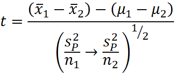
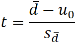
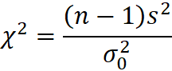
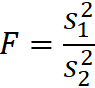

CFA Textbook
--------------------
Study Session 2 Quantitative Methods : Basic
Concepts
--------------------
Reading 12 Hypothesis Testing
--------------------
Summary
- A hypothesis is a statement about one or more populations.
- The steps in testing a hypothesis are as follows:
- Stating the hypotheses.
- Identifying the appropriate test statistic and its
probability distribution.
- Specifying the significance level.
- Stating the decision rule.
- Collecting the data and calculating the test statistic.
- Making the statistical decision.
- Making the economic or investment decision.
- We state two hypotheses: The null hypothesis is the
hypothesis to be tested; the alternative hypothesis is the hypothesis
accepted when the null hypothesis is rejected.
- There are three ways to formulate hypotheses:
- H0: θ = θ0 versus Ha: θ ≠
θ0
- H0: θ ≤ θ0 versus Ha: θ >
θ0
- H0: θ ≥ θ0 versus Ha: θ <
θ0
where θ0 is a hypothesized value of the population
parameter and θ is the true value of the population parameter. In the
above, Formulation 1 is a two-sided test and Formulations 2 and 3 are
one-sided tests.
- When we have a “suspected” or “hoped for” condition for which
we want to find supportive evidence, we frequently set up that
condition as the alternative hypothesis and use a one-sided test. To
emphasize a neutral attitude, however, the researcher may select a
“not equal to” alternative hypothesis and conduct a two-sided test.
- A test statistic is a quantity, calculated on the basis of a
sample, whose value is the basis for deciding whether to reject or
not reject the null hypothesis. To decide whether to reject, or not
to reject, the null hypothesis, we compare the computed value of the
test statistic to a critical value (rejection point) for the same
test statistic.
- In reaching a statistical decision, we can make two possible
errors: We may reject a true null hypothesis (a Type I error), or we
may fail to reject a false null hypothesis (a Type II error).
- The level of significance of a test is the probability of a
Type I error that we accept in conducting a hypothesis test. The
probability of a Type I error is denoted by the Greek letter alpha,
α. The standard approach to hypothesis testing involves specifying a
level of significance (probability of Type I error) only.
- The power of a test is the probability of correctly rejecting
the null (rejecting the null when it is false).
- A decision rule consists of determining the rejection points
(critical values) with which to compare the test statistic to decide
whether to reject or not to reject the null hypothesis. When we
reject the null hypothesis, the result is said to be statistically
significant.
- The (1 − α) confidence interval represents the range of
values of the test statistic for which the null hypothesis will not
be rejected at an α significance level.
- The statistical decision consists of rejecting or not
rejecting the null hypothesis. The economic decision takes into
consideration all economic issues pertinent to the decision.
- The p-value is the smallest level of significance at which
the null hypothesis can be rejected. The smaller the p-value, the
stronger the evidence against the null hypothesis and in favor of the
alternative hypothesis. The p-value approach to hypothesis testing
does not involve setting a significance level; rather it involves
computing a p-value for the test statistic and allowing the consumer
of the research to interpret its significance.
- For hypothesis tests concerning the population mean of a
normally distributed population with unknown (known) variance, the
theoretically correct test statistic is the t-statistic
(z-statistic). In the unknown variance case, given large samples
(generally, samples of 30 or more observations), the z-statistic may
be used in place of the t-statistic because of the force of the
central limit theorem.
- The t-distribution is a symmetrical distribution defined by a
single parameter: degrees of freedom. Compared to the standard normal
distribution, the t-distribution has fatter tails.
- When we want to test whether the observed difference between
two means is statistically significant, we must first decide whether
the samples are independent or dependent (related). If the samples
are independent, we conduct tests concerning differences between
means. If the samples are dependent, we conduct tests of mean
differences (paired comparisons tests).
- When we conduct a test of the difference between two
population means from normally distributed populations with unknown
variances, if we can assume the variances are equal, we use a t-test
based on pooling the observations of the two samples to estimate the
common (but unknown) variance. This test is based on an assumption of
independent samples.
- When we conduct a test of the difference between two
population means from normally distributed populations with unknown
variances, if we cannot assume that the variances are equal, we use
an approximate t-test using modified degrees of freedom given by a
formula. This test is based on an assumption of independent samples.
- In tests concerning two means based on two samples that are
not independent, we often can arrange the data in paired observations
and conduct a test of mean differences (a paired comparisons test).
When the samples are from normally distributed populations with
unknown variances, the appropriate test statistic is a t-statistic.
The denominator of the t-statistic, the standard error of the mean
differences, takes account of correlation between the samples.
- In tests concerning the variance of a single, normally
distributed population, the test statistic is chi-square (χ2)
with n − 1 degrees of freedom, where n is sample size.
- For tests concerning differences between the variances of two
normally distributed populations based on two random, independent
samples, the appropriate test statistic is based on an F-test (the
ratio of the sample variances).
- The F-statistic is defined by the numerator and denominator
degrees of freedom. The numerator degrees of freedom (number of
observations in the sample minus 1) is the divisor used in
calculating the sample variance in the numerator. The denominator
degrees of freedom (number of observations in the sample minus 1) is
the divisor used in calculating the sample variance in the
denominator. In forming an F-test, a convention is to use the larger
of the two ratios, s21
/ s22 or s22 / s21 , as the actual test statistic.
- A parametric test is a hypothesis test concerning a parameter
or a hypothesis test based on specific distributional assumptions. In
contrast, a nonparametric test either is not concerned with a
parameter or makes minimal assumptions about the population from
which the sample comes.
- A nonparametric test is primarily used in three situations:
when data do not meet distributional assumptions, when data are given
in ranks, or when the hypothesis we are addressing does not concern a
parameter.
- The Spearman rank correlation coefficient is calculated on
the ranks of two variables within their respective samples.
中文手册整理
- 概念
- 假设检验（hypothesis testing）
- 原假设（null hypothesis）
- 备择假设（alternative hypothesis）
- 双尾检验（two-tailed test）
- 单尾检验（one-tailed test）
- 基本步骤
- 说明一个假设
- 确定合适的检验统计量及其概率分布
- 说明显著性水平，阐述决策规则
- 收集数据，计算相应的检验统计量
- 做出统计决策，经济决策或投资决策
- 检验统计量 = ( 样本统计量 - 原假设中的总体参数值μ ) / ( 样本统计量的标准误 )
- 检验统计量是根据样本统计量计算出来的
- 检验统计量服从正态分布，t分布，χ²分布，或F分布的
- 检验统计量的一般公式只适用于z分布和t分布
- 关键值
- 判断规则
- 基于检验统计量和关键值的判断规则
- 画分布图
- 确认是双尾还是单尾，显著性水平α，关键值，拒绝域
- 计算检验统计量
- 如果检验统计量落在拒绝域上则拒绝原假设，否则不能拒绝原假设
- 基于p值和显著性水平的判断规则
- 检验统计量得到的p值和显著性水平比较，如果p < α则拒绝原假设 ，否则不能拒绝原假设
- 结论的陈述
- reject, μ is significantly different from μ0
- fail to reject, μ is not significantly different from μ0
- 错误
- 第一类错误，错杀好人，原假设正确，却拒绝了原假设
- 第二类错误，放过坏人，原假设错误，却没有拒绝原假设
- 检验的势（power of the test） = 1 - P(type II error)
- 总体均值
- 单个总体均值的假设检验
- 正态总体下，已知方差用z~N(0,1)，未知方差用t~t(n-1)，大样本可以用z
- 两个独立正态总体均值是否相等
- 总体方差未知，假定相等
- 检验统计量，Sp=方差的样本容量均值
- 服从分布，t~t(n₁+n₂-2)
- 总体方差未知，假定不等
- 成对数检验，两个非独立正态总体均值是否相等用t~t(n-1)
- 总体方差
- 单个总体方差的假设检验，χ²~χ²(n-1)
- 检验两个独立正态总体方差是否相等用F F~F(n₁-1,n₂-1)
- 永远把较大的样本方差放在上边，让F>1 拒绝域只在右边
- 
- 其他
--------------------